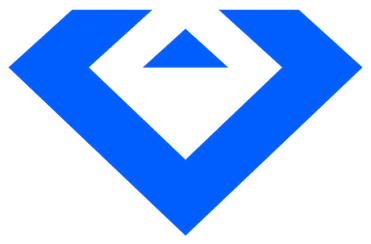

Para setups com várias secções de LED (ex: central + laterais + tiras espalhadas), possivelmente com pitches diferentes. Adiciona uma zona por secção — cada uma com o seu modelo, nº de tiles e posição.
A posição (X = horizontal, Y = vertical, ambas em metros a partir do canto superior esquerdo do conjunto) desenha o diagrama acima à escala e calcula a dimensão total do conjunto já com os gaps entre zonas contemplados. Zonas novas posicionam-se sozinhas ao lado da última, mas a posição é sempre editável à mão. O desenho mostra só o nome de cada zona; o tamanho e o ponto de início/fim em metros ficam na coluna de detalhes ao lado. A lista de cards ordena-se sozinha pela posição (mais à esquerda primeiro) para ser mais fácil encontrar o card certo. Clicar numa zona no desenho ou na coluna de detalhes salta logo para o card dela na lista e abre o popup de edição. O popup arrasta-se pelo título — útil para o afastar e ver o desenho por baixo enquanto editas.
Usa "Aplicar réplicas" numa zona para criar várias cópias iguais em fila de uma vez, com o gap e direção (horizontal/vertical) que definires — o caso direto de várias tiras repetidas. Se depois precisares de mudar o modelo/tamanho dessas cópias, edita só a zona original e usa "Atualizar réplicas" — aplica a alteração às outras com o mesmo nome-base sem criar novas nem mexer nas posições de cada uma.
Para abrir espaço a uma zona nova (ex: adicionar um ecrã à esquerda de tudo o resto): marca a caixa "Sel." nas zonas que já lá estão (ou usa "Todas"), indica quanto deslocar em X/Y aqui ao lado e carrega em "Mover" — soma esse deslocamento à posição de todas as marcadas de uma vez, sem teres de editar zona a zona.
Zonas com o mesmo nome-base (ex: "Lateral", "Lateral 2", "Lateral 3") ficam marcadas automaticamente com a mesma cor no diagrama, no mapa de píxeis exportado e num pontinho junto ao nome de cada zona — só para ajudar a distinguir grupos à vista, não afeta os cálculos.
Desmarca a caixa "Vis." numa zona para a esconder — sai do diagrama, dos totais e do mapa de píxeis exportado, mas fica guardada (não é apagada). Útil para testar cenários sem uma zona ou para preparar uma zona que ainda não está confirmada.
"Remover esta zona", dentro do popup de edição, apaga só essa zona; "Limpar zonas", no fundo da lista, apaga todas de uma vez para recomeçar do zero — pede confirmação antes. Enganaste-te? Ctrl+Z (ou o botão "↩ Desfazer") desfaz a última alteração às zonas — remover, aplicar/atualizar réplicas, mover, arrastar ou limpar tudo. Nenhuma destas ações mexe nas outras calculadoras nem no projeto.
As zonas ficam guardadas automaticamente neste aparelho (mesmo que atualizes a página ou feches esta app) — e são as mesmas zonas que aparecem na aba "Ecrã Complexo" dos Calculadores, dos dois lados.
Em ecrãs largos (computador), o diagrama fica mesmo fixo no topo da página e só o resto desce — fácil de ver mesmo em projetos com muitas zonas. Em telemóvel/tablet mantém-se a barra fixa condensada em baixo.
"Exportar mapa de píxeis" e "Exportar máscara" geram um PNG do canvas combinado em píxeis (posição/tamanho reais de cada zona), para levar para um media server — o mapa tem legendas com os valores, a máscara é só preto/branco para usar como matte de conteúdo.
O total de píxeis serve para dimensionar switcher/processador de LED — é a soma dos píxeis nativos de cada zona, não o canvas final. A "dimensão do conjunto" é o retângulo que envolve todas as zonas, já a contar com os gaps entre elas. A "resolução final do canvas" é esse mesmo retângulo convertido em píxeis (usando o pitch da zona maior como referência) — é o tamanho real a configurar no media server, incluindo o espaço dos gaps. A versão "sem gaps" empacota as zonas lado a lado sem o espaço vazio entre elas.